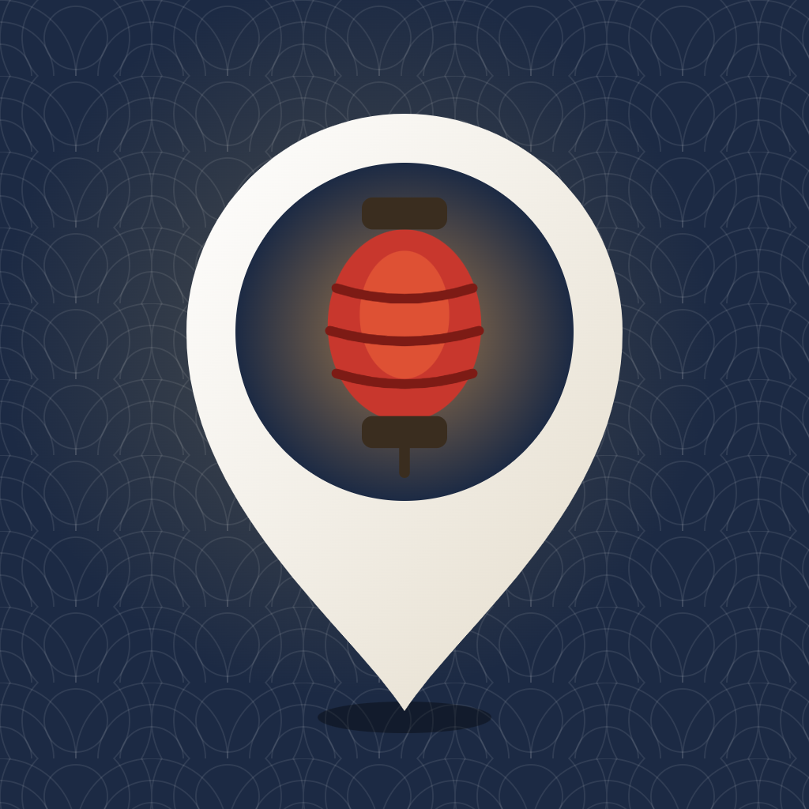
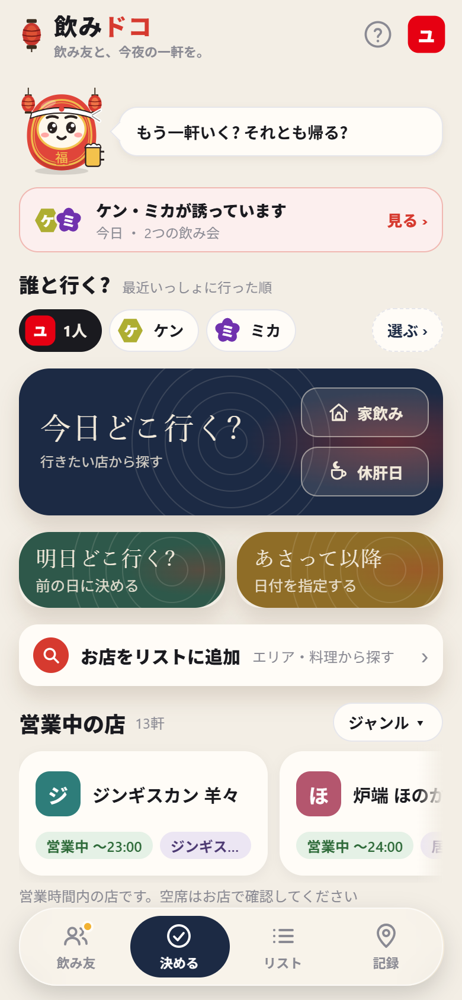
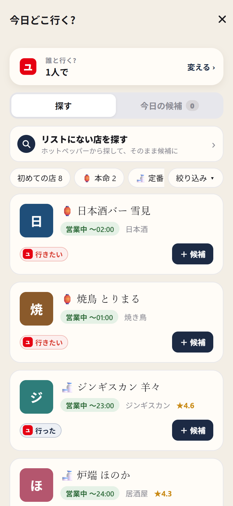
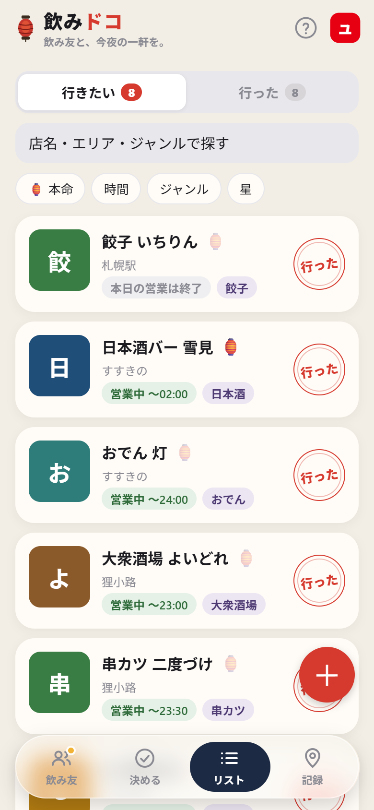
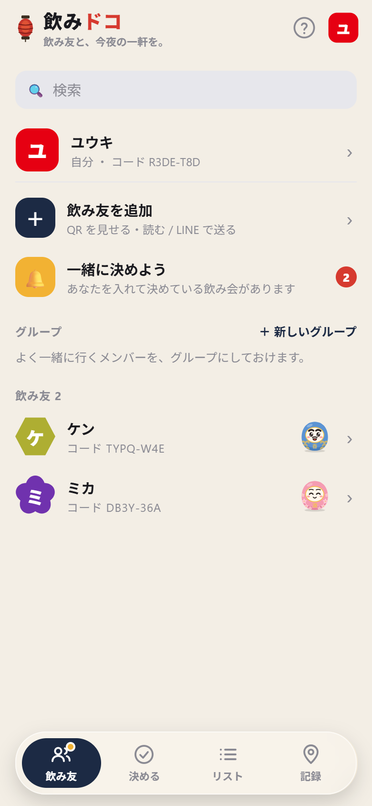

今日どこ行く? を、
すぐ決める。
行きたいお店と行ったお店を記録して、飲み友と「今日どこ行く?」を決める iPhone アプリです。
現在開発中・App Store で公開準備中
できること

誰と行くかを選んで、今日の一軒を決める
1人でも、飲み友とでも。それぞれの「行きたい」から候補を出して、賛成の多いお店に決められます。家飲み・休肝日も記録できます。

行きたいお店から、候補を出す
営業中かどうか、本命・定番、ジャンルで絞って候補に入れます。リストにないお店は、ホットペッパーグルメから探せます。

行きたい・行ったを、まとめて記録
気になるお店は「行きたい」に、行ったら「行った」に。星や本命・定番、メモ、来店記録も残せます。カレンダーと地図で、行った日と場所をふり返れます。

飲み友とつながる
QR コードや LINE で飲み友を追加。よく行くメンバーはグループにまとめて、誘いを送れます。
プライバシー
飲み友に見えるのは、ニックネーム・アイコン・だるま、「行きたい」「行った」のお店、その人を入れた今日の候補だけです。星・本命・定番・メモ・来店記録は、自分にしか見えません。くわしくはプライバシーポリシーをご覧ください。
お店の検索に ホットペッパーグルメ Webサービス を利用しています。
飲みドコ運営